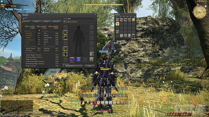
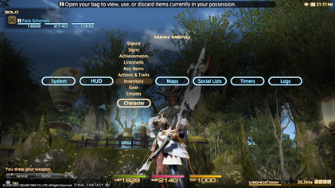

Final Fantasy XIV - Flex
From Wikipedia, the free encyclopedia
This article is about the relaunched game, also known as A Realm Reborn. For the defunct original release, see Final Fantasy XIV (2010 video game).
Final Fantasy XIV[c] is a massively multiplayer online role-playing game (MMORPG) developed and published by Square Enix. Directed and produced by Naoki Yoshida and released worldwide for PlayStation 3 and Windows in August 2013, it replaced the failed 2010 version, with subsequent support for PlayStation 4, macOS, PlayStation 5, and Xbox Series X/S. Final Fantasy XIV is set in the fantasy region of Eorzea, five years after the devastating Seventh Umbral Calamity which ended the original version. In the Calamity, the elder primal Bahamut escaped from his prison, an ancient space station called Dalamud , unleashing an apocalypse across Eorzea. Through temporal magic , the player character of the original version escaped, reappearing at the start of A Realm Reborn. As Eorzea cements its recovery, the player must fend off a reignited invasion from the Garlean Empire.
The original Final Fantasy XIV was a commercial and critical failure. Then-Square Enix President Yoichi Wada announced that a new team, led by Yoshida, would assume control and address the game's flaws. The new team both continued to develop and improve the original version, and secretly worked on a completely new replacement. This new game, codenamed "Version 2.0", used a new engine, improved server infrastructure, and revamped gameplay, nterface, and story. The original version shut down in November 2012, followed by an alpha test for Version 2.0.
The relaunched game released to largely positive reception; critics praised its solid mechanics and progression, and commended Yoshida for an unexpected recovery. After a poor 2013 fiscal year, Square Enix attributed the 2014 return to profitability partly to the game's strong sales and subscriber base. By October 2021, it had gained over 24 million registered players and become the most profitable Final Fantasy game to date.[1] Final Fantasy XIV has received regular updates since release, including five major expansion packs: Heavensward (2015), Stormblood (2017), Shadowbringers (2019), Endwalker (2021), and Dawntrail (2024).
Gameplay
Final Fantasy XIV is an MMORPG, featuring a persistent world where players can interact with each other and the environment. Players create and customize their characters for use in the game, including name, race, gender, facial features, and starting class. Unlike in the original release, players may only choose to be a Disciple of War or Magic as a starting class—Disciples of the Hand and Land are initially unavailable. [2] Players must also select a game server for each character. While all supported languages are available on every server, data centers are located in specific regions (i.e., North America, Europe, Japan, and Oceania) to reduce latency between client and server, and players are advised to choose a server in their region.[3] Regardless of server or language, players can use a large library of automatically translated game terms and general phrases, allowing players who speak different languages to communicate.[4]
Interface
Final Fantasy XIV's PC beta version interface, navigated by a point and click widget system
PC and home console versions use a unified user interface (UI) and control scheme allowing for any combination of keyboard, mouse, and game controller. On PC, the game defaults to drag and drop menus, whereas on the console versions, the default interface resembles the PlayStation 3's XrossMediaBar.[5] This bar is used to access menus, maps, logs, and configuration options. The head-up display for both versions includes a message log, party status menu, mini-map, and action bar. The size and location of all UI elements may be customized.[6]
Final Fantasy XIV's home console interface, navigated by a cross-bar system
Actions and battle commands differ between PC and console versions. The PC versions support both point and click and keyboard input for commands or macros. Macro commands are customizable sequences of actions that allow players to execute desired abilities at a specific time. The home console versions instead map the action bar and macros to the "Cross Hotbar"—sets of four icons arranged in a cross shape. These are the grouped and accessed through a combination of the shoulder buttons and the directional pad or the face buttons. Using each shoulder button to cycle through the cross sets, players have quick access to commands. This interface is also available to PC players who use controllers.[5]
Character progression
In addition to these player versus environment (PvE) challenges, various forms of player versus player (PvP) combat exist in Final Fantasy XIV. The Feast was an arena featuring structured four-versus-four battles where a player could register with up to three teammates to challenge another four-person team. This mode was removed in patch 6.1, when it was replaced with Crystalline Conflict,[11] which consists of two teams of five competing to seize control of and push a crystal which starts at the middle of the arena to each team's goal point. The second type, Frontlines, is a large battleground in which players form teams of up to 24 members. Teams are delineated by players' allegiance to one of three Grand Companies and the team which reaches the target number of points first wins the match. Multiple modes are available, each with differing locations and rulesets. Within the game, Frontlines is presented as an organized set of military exercises between the three nations with the ulterior goal of jockeying for dominance of regions rich in magical artifacts.[12] The third type, Rival Wings, is a battle arena mode where players manipulate minion waves and pilot mechs to destroy enemy objectives.